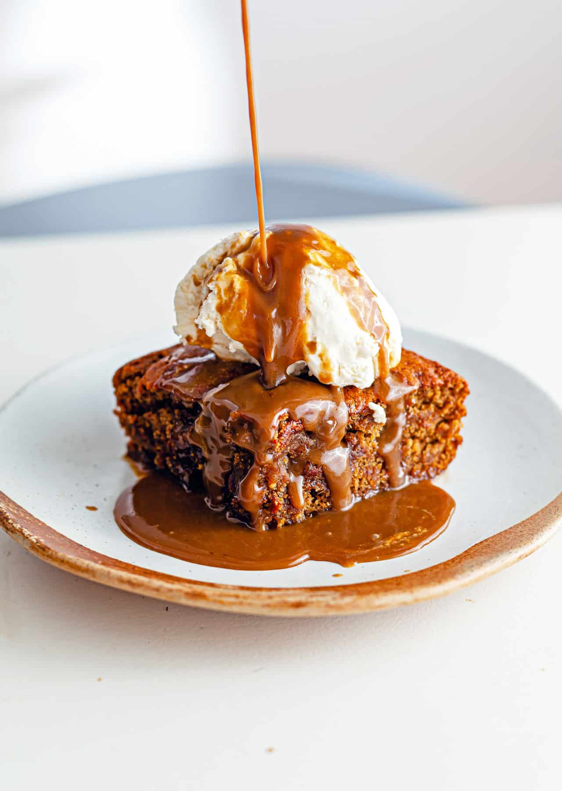

Sticky Toffee Pudding

Description
Sticky toffee pudding, also known as STP or as sticky date pudding in Australia and New Zealand, is a British dessert
consisting of a moist sponge cake, made with finely chopped dates, covered in a toffee sauce and often served with a
vanilla custard or vanilla ice-cream. It is considered a British classic by various culinary experts, although the
origins of the contemporary dish are only in the middle of the twentieth century.
These luscious sticky toffee puddings
are all about the honeyed sweetness of plump dates and creamy caramel. A touch of corn syrup ensures that the caramel
stays silky smooth, while a bit of vanilla in the cake complements its richness. Serve them with a dollop of unsweetened
whipped cream for contrast.
Ingredients
Toffee Sauce
- 2 1/2 cups heavy cream
- 1 stick unsalted butter (4 ounces)
- 1/2 cup light corn syrup
- 1 cup granulated sugar
Cake
- 6 ounces pitted dates (about 7 dates preferably Medjool)
- 3/4 cup water
- 3/4 cup plus 2 tablespoons all-purpose flour
- 1 teaspon baking powder
- 1/4 teaspoon baking soda
- 1 pinch of salt
- 4 tablespoons unsalted butter (softened)
- 3/4 cup packed light brown sugar
- 1 large egg
- 1/2 teaspoon pure vanilla extract
- Vanilla ice cream or lightly sweetened whipped cream (for serving)
Steps
- In a medium saucepan, combine 1 1/4 cups of the cream with the butter, corn syrup and sugar; bring to a boil.
Cook over moderately low heat, stirring frequently, until a deep amber caramel forms, about 40 minutes. Carefully
whisk in the remaining 1 1/4 cups of cream. Strain the sauce through a sieve into a bowl.
- In a small saucepan, simmer the dates in the water over moderately low heat until the water is nearly absorbed and
the dates are soft, about 15 minutes. Transfer the dates and any liquid to a food processor and puree until very smooth.
- Preheat the oven to 350°. Lightly butter six 1/2-cup ramekins. In a small bowl, whisk the flour with the baking
powder, baking soda and salt. In a medium bowl, using an electric mixer, beat the butter with the brown sugar at
medium speed until light and fluffy. Beat in the egg and vanilla, then beat in the date puree. At low speed, beat
in the dry ingredients. Spoon the batter into the ramekins and smooth the tops. Bake for 20 minutes, or until a
toothpick inserted into the centers comes out clean; let cool slightly.
- Using a small serrated knife, trim the tops of the cakes level with the rims of the ramekins. Unmold the cakes and
invert them onto a wire rack. Slice each cake in half horizontally. Wipe out the ramekins and spoon 1 tablespoon of
the toffee sauce into each. Return the bottom layers of the cakes to the ramekins, cut side up. Spoon another
tablespoon of the toffee sauce into the ramekins and top with the remaining cake layers. Spoon another tablespoon
of the toffee sauce over the cakes and spread evenly. Place the ramekins on a baking sheet and bake for 10 minutes,
or until the toffee is bubbling around the edges.
- Let the puddings cool for 5 minutes, then run a thin-bladed knife around the insides of the ramekins; invert each
pudding onto a dessert plate. Rewarm the remaining toffee sauce and spoon some around the puddings. Serve with vanilla
ice cream or whipped cream.